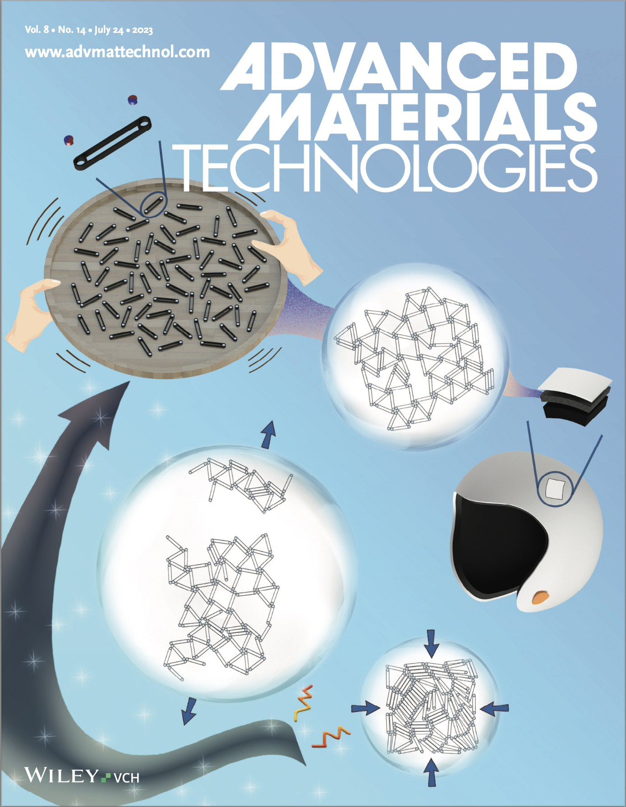
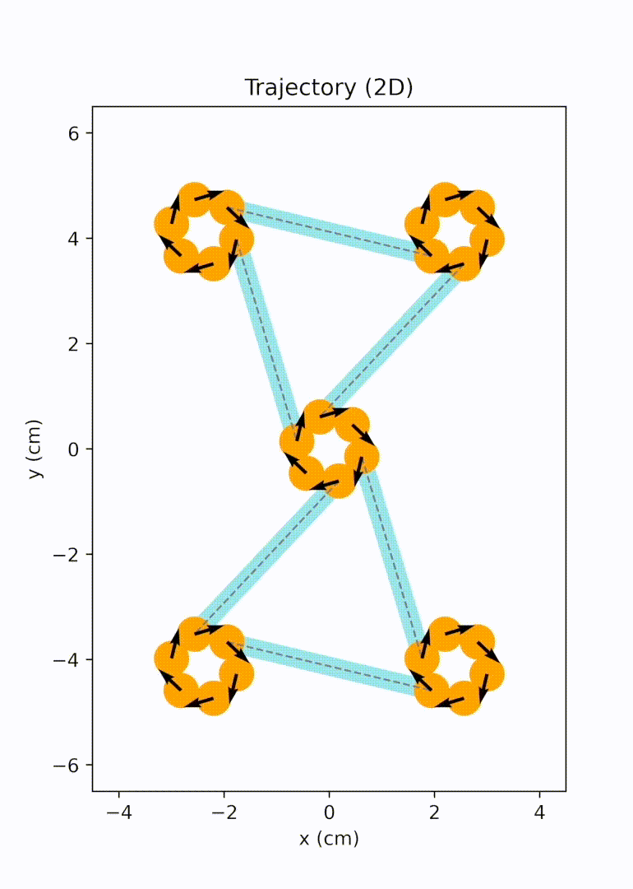
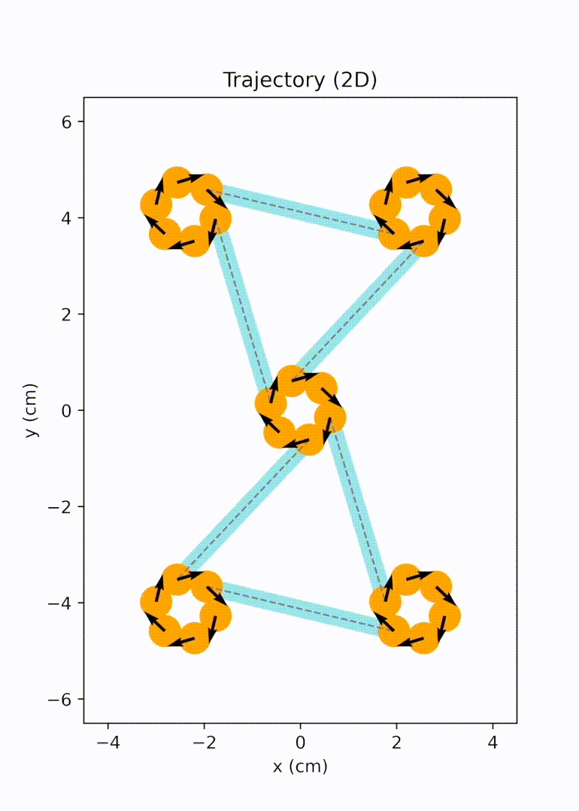
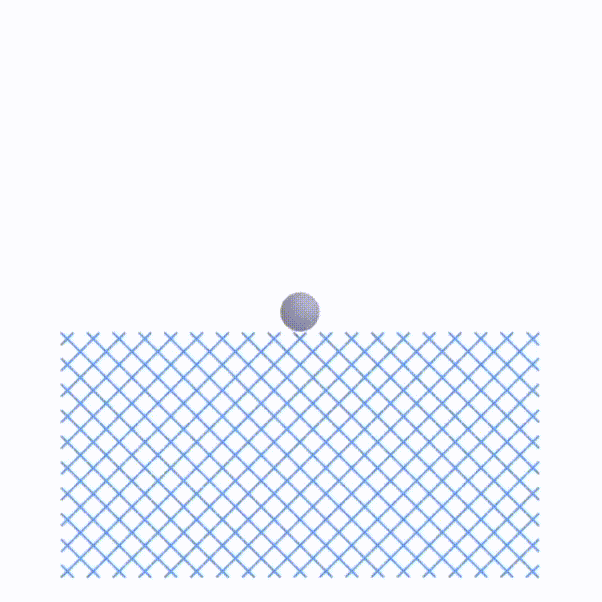
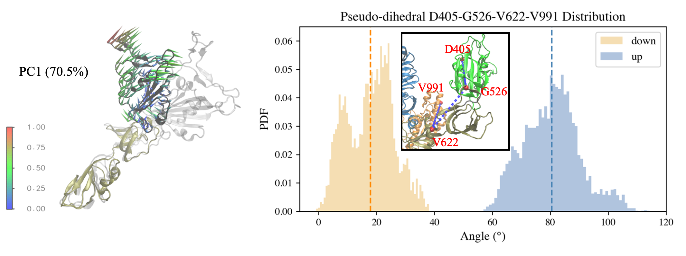
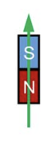

Selected Projects
Research Projects
Year: 2022-2024
Project description: We noticed that 2D magneto-elastic networks are typically created by embedding hard magnets into soft matrices, forming a monolithic structure. While these materials possess excellent properties, any damage incurred under extreme loading is permanent. Therefore, we proposed a novel type of ordered open networks that resemble nanoporous materials, accomplished by the self-assembly of macro-scale magneto-elastic bars. These networks exhibit on-the-fly healability, a characteristic not found in monolithic solids. Our simulations reveal that these magneto-elastic networks can rearrange and break at their magnetic nodes under extreme conditions and largely recover their original network pattern under moderate random excitations. We established design criteria for forming stable open networks. We also examined the network mechanical properties using uniaxial tensile tests.1
To unravel the emergent elasticity relation of assembled magneto-elastic network from the bar units, we conducted particle dynamics simulations and put forward an analytical framework with Cauchy-Born approximation. Discussions were focused on a simplified model with perfect triangular pattern. The conformational change of the lattice in response to applied strain was captured by a combination of the rotation of each magnet bound in the magnetic node and the radial expansion of the node. The numerical and analytical analyses provide a way to predict the 2D bulk modulus of triangular magneto-elastic networks with various design parameters, including bar length and magnetic strength.2 All simulations were performed with an in-house Python simulator developed by us.
Later on, we further extended the design space from bar-shaped units to elements with multiple branches and active sites, significantly broadening the achievable network topology. We migrated our modeling and simulation framework to the HOOMD-blue particle simulation toolkit for better performance. We implemented replica exchange Monte Carlo (REMC) simulations to efficiently derive networks with lower defect rates. We also explored the auxetic behavior arising in one of the rectangular networks and evaluated impact responses of these openwork materials computationally and experimentally.3
Remarks: particle dynamics simulations (HOOMD-blue, Python), advanced sampling (REMC), network analysis.
|  Cover picture |
 Unit cell mode 1 |
 Unit cell mode 2 |
 REMC (bars) REMC (bars) |
 Axuetic behavior (crosses) Axuetic behavior (crosses) |
 Impact response (cross) |
Year: 2023-2024
Project description: This project aims to demonstrate how order, elongation, and inter-protein hydrogen bonding are responsible for the modular toughness, elastic modulus, maximum stress, and maximum strain achieved through post-spin drawing of spider silk proteins. I contributed by conducting dissipative particle dynamics (DPD) simulations on coarse-grained spider silk proteins in LAMMPS and developing Python scripts for network analysis on semi-crystalline protein networks obtained from these simulations. The original coarse-grained DPD model was derived from a previous publication, with one protein bead and one water bead representing three amino acids and nine water molecules, respectively.4 We added pull forces to each chain to mimic the silk processing and investigated changes in network topology and mechanical properties. This work is covered comprehensively in a recently submitted manuscript.5
Remarks: dissipative particle dynamics (DPD, LAMMPS), network analysis, Python.
 DPD simulation of pulling individual chains |
Year: 2020-2021
Project description: In this study, I conducted RMSD-based Targeted Molecular Dynamics (TMD) simulations on glycosylated S-protein head protomers to complete the opening and closing transitions in a short simulation time. PCA was performed on the conformations sampled in 50-ns MD simulations, from which the initial and target structures used in TMD runs were generated. PC1 is characterized by the RBD rotating up and down. PC2 captures the NTD-SD1/SD2-RBD pocket closing and drifting. In TMD simulations, each initial structure finally reached the target conformation with an RMSD around 0.5 Å. The path completion was also validated in the 2D PC1-PC2 space. An RBD orientation dihedral was defined to quantify the global movement of RBD in the protomer, which increased or decreased nearly monotonically in the opening and closing transitions, respectively. The intra- and inter-domain salt bridges related to the protomer conformational change were investigated. Some critical backbone dihedrals reluctant to undergo the transition and remaining in the initial state were also detected.
Remarks: protein dynamics (NAMD), advanced sampling method (TMD), Python (MDAnalysis), data analysis.
 |
 |
Year: 2020-2021
Project description: The Kresling truss structure, derived from Kresling origami, has been widely studied for its bi-stability and various other properties that are useful for diverse engineering applications. In this project, we created a magneto-Kresling truss (MKT) design that involves embedding nodal magnets in the purely elastic Kresling truss structure, which results in a more complex energy landscape, and consequently, greater tunability under mechanical deformation. We showed that the magnetic interaction could alter the potential energy landscape by either changing the stable configuration, adjusting the energy well depth, or both. Energy wells with different minima endow this magneto-elastic structure with an outstanding energy storage capacity. More interestingly, proper design of the magneto-Kresling truss system yields a tri-stable structure, which is not possible in the absence of magnets. We also investigated the wave propagation property of a chain of MKT units with LAMMPS Molecular Dynamics Simulator. The proposed magneto-Kresling truss design sets the stage for fabricating tunable, scalable magneto-elastic multi-stable systems that can be easily utilized for applications in energy harvesting, storage, vibration control, as well as active structures with shape-shifting capability.6
Remarks: modeling, energy minimization, Python (SciPy, mpi4py), visualization.
 |
 |
Toy Projects
Year: 2020
Project description: This toy project was inspired by protein folding. Coarse-grained (CG) protein networks are commonly represented by C\(\alpha\) atom of each residue. Some CG models go beyond this representation by incorporating dihedral angles to capture detailed local conformational changes. We want to study if pure diherals are enough to reproduce protein folding on a CG level. This project involves two tasks. The first task is to fold a triangulated 2D lattice with both bonded and non-bonded (Lennard-Jones) potentials. For the bonded terms, the bonds and angles are rigid. The dihedrals are flexible. The second task is to reproduce the folded sheet with only dihedral potentials. The proper dihedral type and coefficients should come from iterative Boltzmann inversion (IBI). Here, I realized the folding by rigid bonds and angles, as well as harmonic dihedrals and LJ potentials. Then, I exported the dihedral distributions from the equilibrated system and implemented Boltzmann inversion to calculate proper dihedral potentials necessary for the system to remain folded after all other potentials being removed. This process was performed iteratively. The sheet could largely remain the initial folded shape with only the dihedral potentials calculated from IBI. Both fourier type and tabulated dihedrals were tested.
Remarks: molecular dynamics simulations (LAMMPS), iterative Boltzmann inversion (IBI), Python (pandas, lmfit, MDAnalysis).
 Sheet folding with rigid bonds, angle, and LJ potentials |
 Folded sheet with only fourier type dihedral potentials |
Footnotes
Yang, X., Leng, J., Sun, C., & Keten, S. (2023). Self‐assembled robust 2D networks from magneto‐elastic bars. Advanced Materials Technologies, 8(14), 2202189.↩︎
Yang, X., & Keten, S. (2023). Emergent elasticity relations for networks of bars with sticky magnetic ends. Extreme Mechanics Letters, 65, 102093.↩︎
Yang, X., Leng, J., Sun, C., & Keten, S. (2025). Highly ordered 2D open lattices through self-assembly of magnetic units. Under review.↩︎
Lin, S., Ryu, S., Tokareva, O., Gronau, G., Jacobsen, M. M., Huang, W., … & Buehler, M. J. (2015). Predictive modelling-based design and experiments for synthesis and spinning of bioinspired silk fibres. Nature communications, 6(1), 6892.↩︎
Graham, J., Subramani, S., Yang, X., Zhang, F., and Keten, S. (2025). Charting the envelope of mechanical properties of synthetic silk fibers through predictive modeling of the drawing process. Science Advances (Accepted).↩︎
Yang, X., & Keten, S. (2021). Multi-stability property of magneto-Kresling truss structures. Journal of Applied Mechanics, 88(9), 091009.↩︎